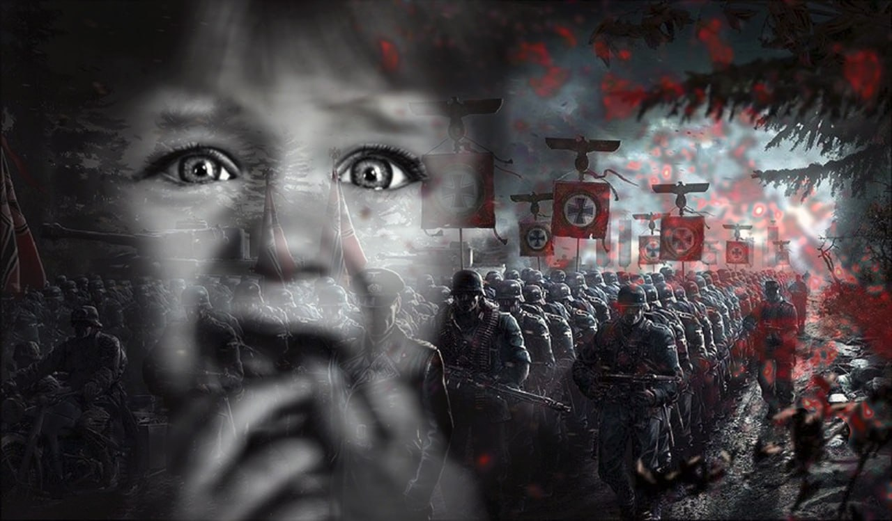

ЛИЦО ВОЙНЫ

Что ж, дать в забвенье утонуть
Прошедших этот адский путь? –
Тогда он снова повторится.
Листайте Прошлого страницы,
Переплавляя в Правду боль…
Юлия Друнина
9 мая День победы.
1418 дней и ночей длилась эта война. Война, ставшая всенародной. Бессмертен подвиг нашего народа в Великой Отечественной войне.
Для целого поколения людей война против фашистских захватчиков стала мерилом верности и самоотверженности, честности и благородства, мужества и бесстрашия.
Вот уже много лет наша литература пишет о той трагической эпохе.
Она возвращает нас к событиям войны не только для того, чтобы вновь и вновь показать трудный путь нашего народа, но и для того, чтобы опыт прошлого предостерег от катастрофических ошибок в будущем.
Дети войны, пионеры герои, дети в тылу, дети партизаны – разные по сути, но объединенные бесконечной любовью к своей Родине.
В их грудях горел огонь патриотизма, который помогал им преодолевать все трудности и страхи. Они оставались незыблемыми в своей вере, мечтах и надежде на лучшее будущее
Мы должны помнить этих маленьких героев и благодарить их за все, что они сделали
Их подвиг не забыт, их дух живет в наших сердцах, наполняя нас силой и мотивацией сражаться за свободу и мир.
Пусть все дети сегодняшнего дня найдут в себе героя, который защитит их мечты и превратит их в реальность.